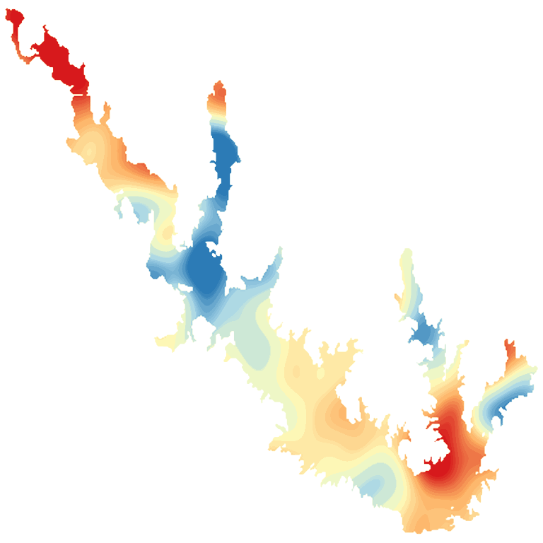

LakeScope › TX
Sam Rayburn Reservoir today
Updated 2026-11-14 - Atlas Labs
Clear water, 66°F water, level steady, 9 ft below normal, windy Saturday (15 mph E).
Water level
152.58 ft
USGS gauge 08039300 - 2026-11-14
7-day trend: steady (-0.13 ft). Compared with normal for this date: -8.7 ft (same weeks, 2016-2025).
Water clarity and algae
Clear water Last clear view: yesterday.
Surface temperature
66°F
seen from space on 2026-11-10

Weather, next 3 days
| Day | Sky | High / low | Wind | Rain |
|---|---|---|---|---|
| Saturday | Sunny | 63 / 50°F | 15 mph E | 0% |
| Sunday | Rain Showers | 55 / 49°F | 20 mph E | 91% |
| Monday | Chance Rain Showers then Partly Sunny | 57 / 49°F | 15 mph NE | 35% |
Sunrise 06:43 - sunset 17:18 - Waxing crescent. National Weather Service.
Get the LakeScope app: alerts and the 3-D view of Sam Rayburn Reservoir